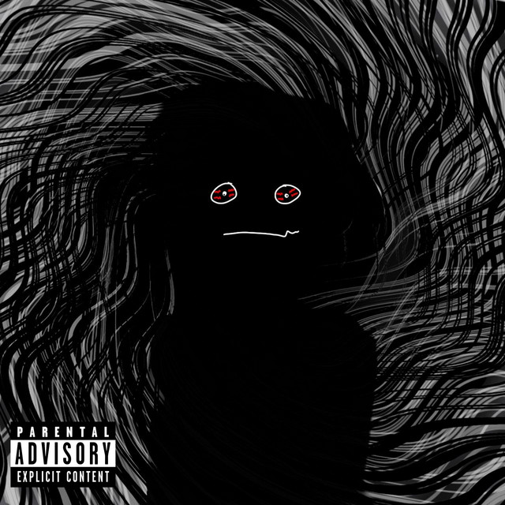
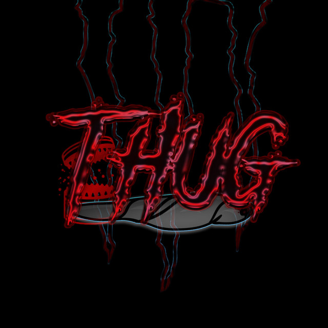
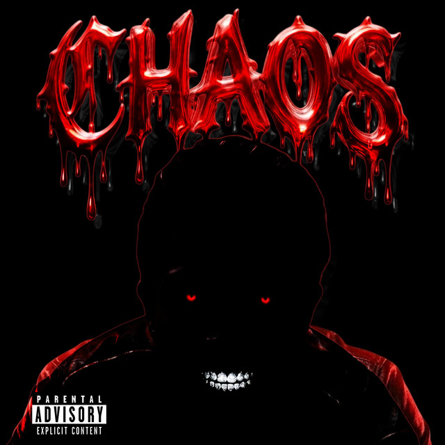
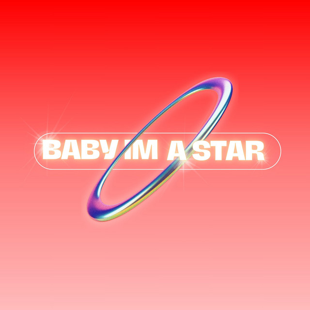

ALL RELEASES / PROJECTS / MIXTAPES
Music
A catalog space for K44TER releases.
✦
All seven tracks

THUG

CHAOS
BABY STAR
N0SL33P
RAINBOW BLUE

EMO LUV
Use the play control to listen here, or select a cover to open its Spotify release.